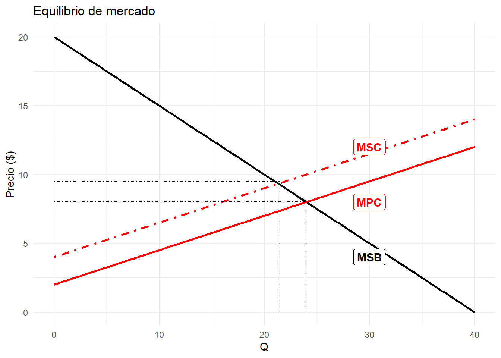

Capítulo1 La perspectiva económica estándar: mercados y eficiencia
En 1956 apareció el artículo A contribution to the theory of economic growth escrito por Robert Solow. Por este trabajo recibió el premio en honor a Alfred Nobel en 1987. Qué explica el crecimiento económico, y qué podemos hacer para acelerar el ritmo de progreso material han sido cuestiones de continuo interés en ámbitos políticos y académicos. En 1956 el PIB mundial se estimaba en $12.3 trillones de dólares (precios de 2011). En 1940, cuando Solow ingresó a Harvard, el PIB mundial rondaba los $7.8 trillones, un incremento de 57% en tan solo 16 años. En 2015 la cifra alcanzó $108 trillones.
Las ideas que se han desarrollado a partir del trabajo de Solow plantean, de una u otra forma, un escenario de crecimiento indefinido. Mientras tengamos cambio tecnológico que incremente la productividad del trabajo será posible un aumento persistente del ingreso por persona.
El crecimiento económico requiere, por necesidad, materia y la energía. Todos los objetos de nuestra vida moderna provienen de algún lado. Toda transformación de insumos en bienes y servicios finales requiere energía ¿Podemos seguir pensando en un crecimiento económico indefinido?
Por otro lado, de la producción y el consumo resulta la emisión de desechos ¿Por qué contaminamos tanto? ¿Cuál es el nivel óptimo de contaminación? Son preguntas obligadas en la perspectiva estándar. La narrativa convencional nos dice que en una economía de mercado la contaminación excesiva es consecuencia de la ausencia de precios sobre los bienes y servicios ambientales. Sin precios los agentes no tienen la señal de escasez. Si el uso de la atmósfera para depositar allí las emisiones de gases efecto invernadero no tiene un costo, entonces actuamos como si fuese ilimitada. Individualmente nos beneficia, colectivamente es un suicidio. La mano invisible no funciona bien. A esta falla de mercado la conocemos como externalidad. La receta para solucionar este problema es colocar un precio, a través de impuestos o subsidios o la creación de mercados.
Ilustremos con la siguiente situación. Los agricultores buscan maximizar su beneficio, para lo cual deciden su producción basado en el precio de venta de su producto y el costo de los insumos y factores de producción. El uso de agroquímicos contamina los cuerpos de agua que surten a una población aledaña. Cada consumidor, por su parte, decide cuanto comprar del bien agrícola dados los precios de los bienes y su ingreso ¿Dónde queda incorporado el perjuicio por la contaminación del acuífero? Podemos distinguir entre dos tipos de costos asociados a la producción del bien agrícola: los costos privados y los costos sociales. Los primeros corresponden a los efectivamente incurridos por el productor, mientras que los segundos incorporan los privados y el valor de la pérdida de bienestar por la contaminación. Graficamente
library(ggplot2)
demand<- function(x) {
y <- 20-0.5*x
return(y)
}
supply<- function(x) {
y <- 2+0.25*x
return(y)
}
msc<- function(x) {
y <- 4+0.25*x
return(y)
}
annotation <- data.frame(
x = c(30,30,30),
y = c(4,8,12),
label = c("MSB", "MPC","MSC")
)
eq.plot<-ggplot(data.frame(x=c(0,40)),aes(x=x))+stat_function(fun=demand,geom="line",size=1)+
stat_function(fun=supply,geom="line",color="red",size=1)+stat_function(fun=msc,geom="line",color="red",size=1,linetype=4)+
theme_minimal()+geom_segment(aes(x=24,y=0,xend=24,yend=8),color="black",linetype=4)+geom_segment(aes(x=0,y=8,xend=24,yend=8),color="black",linetype=4)+
geom_segment(aes(x=21.5,y=0,xend=21.5,yend=9.5),color="black",linetype=4)+geom_segment(aes(x=0,y=9.5,xend=21.5,yend=9.5),color="black",linetype=4)+
labs(title="Equilibrio de mercado",y="Precio ($)", x="Q")
eq.plot<-eq.plot+ geom_label(data=annotation, aes( x=x, y=y, label=label),
color=c("black","red","red"),
size=4 , angle=45, fontface="bold" )
eq.plot
MSB: beneficio marginal social o curva de demanda. Refleja el valor que le otorga la sociedad a cada unidad adicional del bien agrícola
MPC: Costo marginal privado. Corresponde al costo marginal efectivamente incurrido por el productor
MSC: MPC más el valor del perjuicio que experimenta la sociedad por la contaminación generada por la producción de una unidad adicional del bien agrícola. A este lo llamamos el costo marginal externo, MEC. Gráficamente es la distancia vertical de MPC a MSC para una cantidad dada.
Dado que el daño por contaminación no está incorporado en la estructura de costos de los agricultores, entonces las decisiones de producción responderán a la MPC, y por lo tanto el equilibrio de mercado se dará en la intersección de MB y MPC. Desde el punto de vista social, lo deseable es la situación donde MSC=MSB, que en este caso corresponde a un menor nivel de producción y un precio más alto.
La manera de solucionar esta situación consiste en hacer que el MSC haga parte de los costos en los que efectivamente incurre el productor. Por ejemplo, a través de un impuesto.